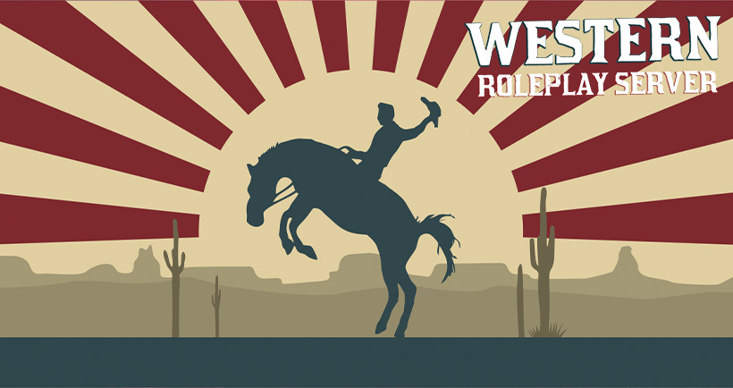

Разработка Roleplay сервера на основе модификации RedM для игры Red Dead Redemption II
Проект WESTERN собрал в себя игроков, желающих попробовать жанр дикого запада. Выход проекта летом 2020 года наделал немало шума в игровом сообществе: более 1000 игроков присоединились к discord каналу сервера, десятки стримеров транслировали свою игру на платформах Twitch и Youtube.
RedM - это игровой мод для Red Dead Redemption II, который позволяет создавать и присоединяться к пользовательским ролевым серверам.
Frontend - html, css, jQuery, bootstrap.
С# - для backend части проекта.
Linux - операционная система, на котором был запущен игровой сервер.
Для проекта Western было создано несколько десятков различных интерфейсов для взаимодействия игроками.
Удобный редактор персонажа - ключевой интерфейс любого проекта. Настройка должна быть удобной и легкой.
В меню игрока находится все необходимое для полноценной игры. Различные виды взаимодействия, настройки, документы а также инвентарь.
Магазин выполнен в виде интерактивной книги, где игрокам доступно описание лошадей, выбор цвета и их покупка. Перелистывание мышкой за край уголка сопровождается соответствующей анимацией.
Вы можете посмотреть веб версию мода по ссылке:
{kind=link}
{kind=link}
{kind=link}
{kind=link}
{kind=link}
{kind=link}
{kind=link}